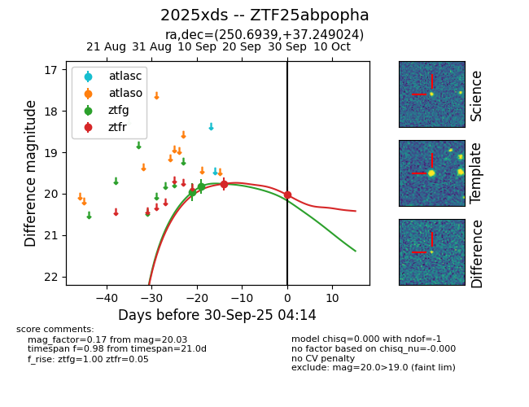
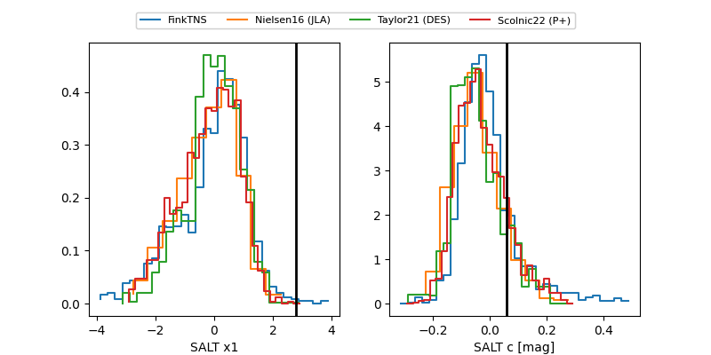

FINK: ZTF25abpopha
Lasair: ZTF25abpopha
ALeRCE: ZTF25abpopha
TNS: 2025xds
YSE: 2025xds
ZTF25abpopha (ztf,fink)
2025xds (tns,yse)
equatorial (ra, dec) = (250.6939,+37.24902)
galactic (l, b) = (60.0751,+40.77952)


last ztfg=19.83, ztfr=20.03
2 ztfg, 2 ztfr detections